📦 リポジトリ: github.com/nnn112358/minispeech_demo
MiniSpeechで「おはようございます、こんにちは、こんばんは、おやすみなさい。」を、全 6 encoder × 4 vocoder = 24 通りで合成した mel→audio の STFT スペクトログラム。 セルをクリックすると拡大表示。▶ 音声付き(24 件)は動画(再生ヘッド付き)で再生、 それ以外は原寸 PNG を表示します。見出しの数値は各モデルの ONNX パラメータ数(下表参照)。
| encoder ＼ vocoder | vocos_d640.41M | vocos_d1280.80M | vocos_d2562.13M | vocos_d51214.51M |
|---|---|---|---|---|
| enc_d640.29M | ▶ 音声 | 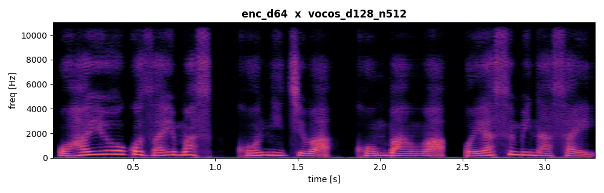 ▶ 音声 | ▶ 音声 | ▶ 音声 |
| enc_d960.65M | ▶ 音声 | ▶ 音声 | 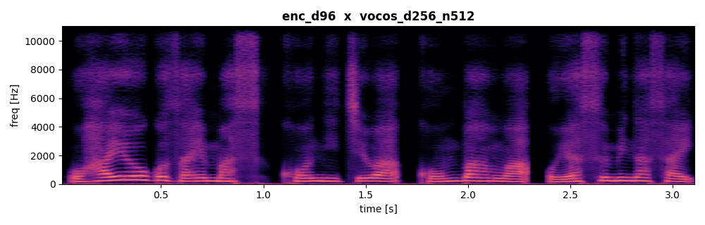 ▶ 音声 | 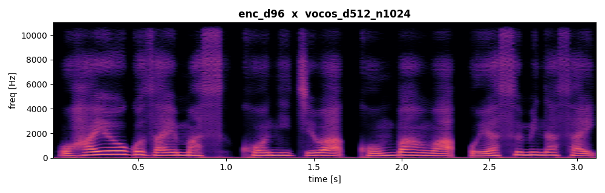 ▶ 音声 |
| enc_d1281.05M | ▶ 音声 | ▶ 音声 | 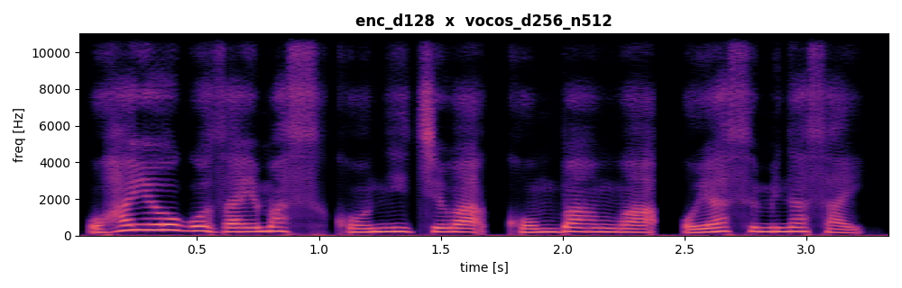 ▶ 音声 | ▶ 音声 |
| enc_d1922.14M | 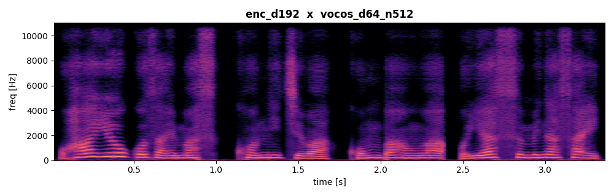 ▶ 音声 | ▶ 音声 | 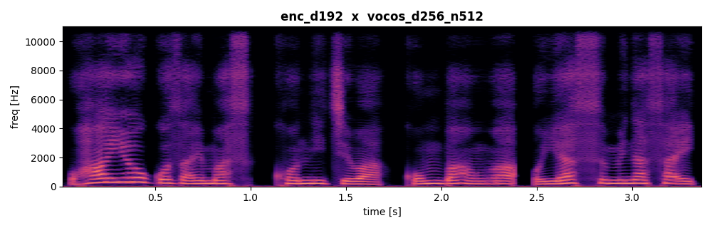 ▶ 音声 | ▶ 音声 |
| enc_d2563.61M | 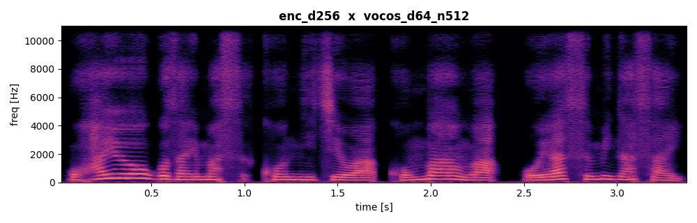 ▶ 音声 | 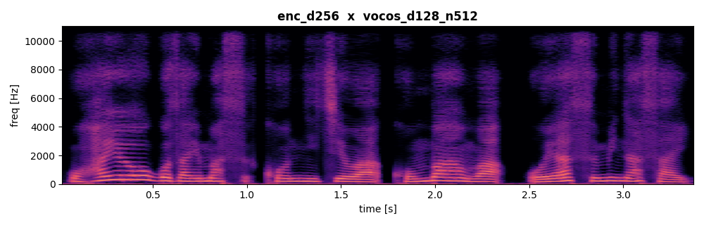 ▶ 音声 | ▶ 音声 | 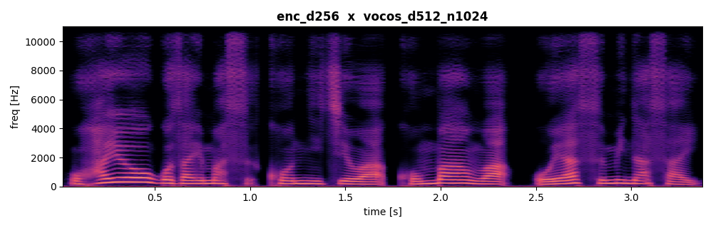 ▶ 音声 |
| enc_d3847.67M | 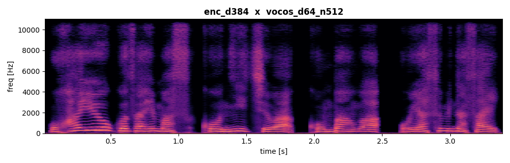 ▶ 音声 | ▶ 音声 | 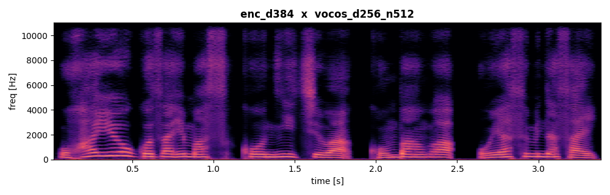 ▶ 音声 | 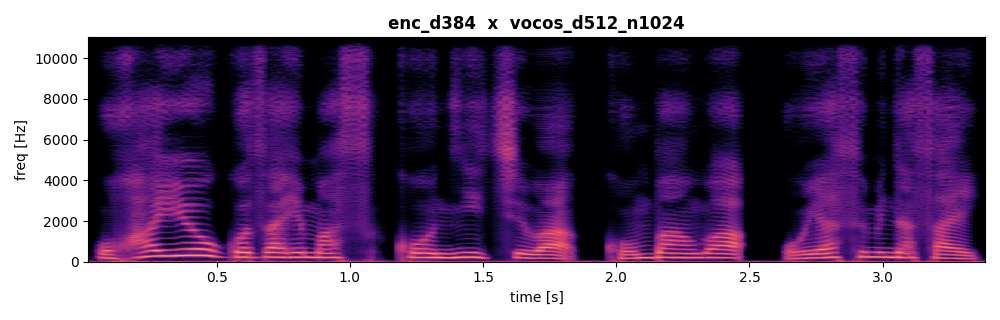 ▶ 音声 |
phoneme_ids → mel)
MiniSpeech の音響モデル。piper-plus(VITS)を分解し、重い部分
(Self-Attention・VAE・Normalizing Flow)を削って軽量な depthwise-separable Conv ブロックに置き換えたモデル。
Duration を整数(long)で一本化して repeat_interleave で展開するため、mel 長と出力長が構造的に一致する。
PyTorch 列は学習重みのみ(位置エンコーディング定数バッファ PE を除く)。ONNX 列は PE 定数
(max_len 2048 × dim)をグラフに焼き込むため 2048×dim 分だけ多い
(例: enc_d192 = 学習 1.75M + PE 0.39M = 2.14M)。CPU 時間は fp16・1 スレッド・mel T≈131(≒音声1.5s)。
mel-L1 は teacher-forced(GT duration で展開)の予測 mel と正解 mel の L1(JSUT 5000 発話、
eval モード、PyTorch checkpoint 実測。小さいほど高品質)。ONNX は duration を内部予測するため
teacher-forced 評価ができず PyTorch で計測。L1 回帰学習なので dim に対して単調に改善する。
| モデル | dim | PyTorch params (PE 除く) | ONNX params (PE 込み) | fp16 サイズ | CPU 時間 | mel-L1 ↓ |
|---|---|---|---|---|---|---|
| enc_d64 | 64 | 0.16M | 0.29M | 0.6 MB | 1.5 ms | 0.648 |
| enc_d96 | 96 | 0.45M | 0.65M | 1.3 MB | 3.3 ms | 0.565 |
| enc_d128 | 128 | 0.79M | 1.05M | 2.1 MB | 4.7 ms | 0.516 |
| enc_d192 | 192 | 1.75M | 2.14M | 4.3 MB | 8.0 ms | 0.442 |
| enc_d256 | 256 | 3.08M | 3.61M | 7.2 MB | 13.1 ms | 0.392 |
| enc_d384 | 384 | 6.88M | 7.67M | 15.4 MB | 26.1 ms | 0.329 |
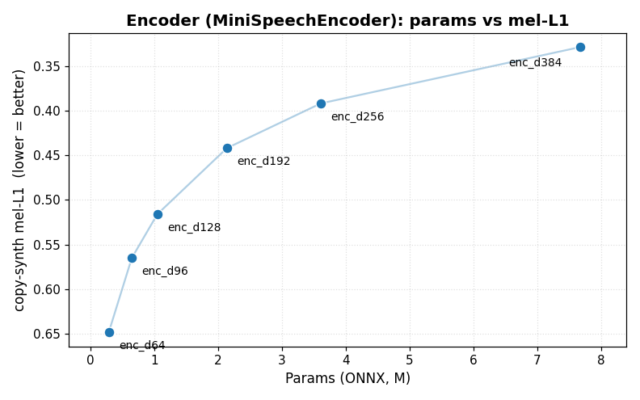
mel → audio(Vocos)ボコーダは Vocos(ConvNeXt + iSTFT。周波数領域で振幅と位相を予測し iSTFT で波形化。 高品質でマルチスレッド CPU に強い)。dim/n_fft 違いで tiny / Lite-C / Lite-A / Full の 4 種を収録し、 同じ mel 契約・同じデータ・同じ判別器(MPD/MRD)で学習する。
パラメータ数(ONNX 実測)・fp16 サイズ・CPU 時間は リポジトリ README より
(fp16・1 スレッド・mel T≈131)。mel-L1 は copy-synthesis(wav→mel→ボコーダ→wav→mel の L1、
JSUT val 50 発話をデプロイ fp16 ONNX で実測。小さいほど高品質)。
判別器(MPD)を generator サイズから切り離し max_ch=128 固定で学習し直したもの(過強判別器の高域アーティファクトを抑え、特に dim が大きいほど改善: d512 0.166→0.151, d256 0.241→0.236)。
| モデル | 種別 | 構成 | ONNX params | fp16 サイズ | CPU 時間 | mel-L1 ↓ |
|---|---|---|---|---|---|---|
| vocos_d64 | Vocos | dim=64, n_fft=512 (tiny) | 0.41M | 0.8 MB | 3.7 ms | 0.350 |
| vocos_d128 | Vocos | dim=128, n_fft=512 (Lite-C) | 0.80M | 1.6 MB | 7.6 ms | 0.275 |
| vocos_d256 | Vocos | dim=256, n_fft=512 (Lite-A) | 2.13M | 4.3 MB | 15.9 ms | 0.236 |
| vocos_d512 | Vocos | dim=512, n_fft=1024 (Full) | 14.51M | 29.1 MB | 103.0 ms | 0.151 |
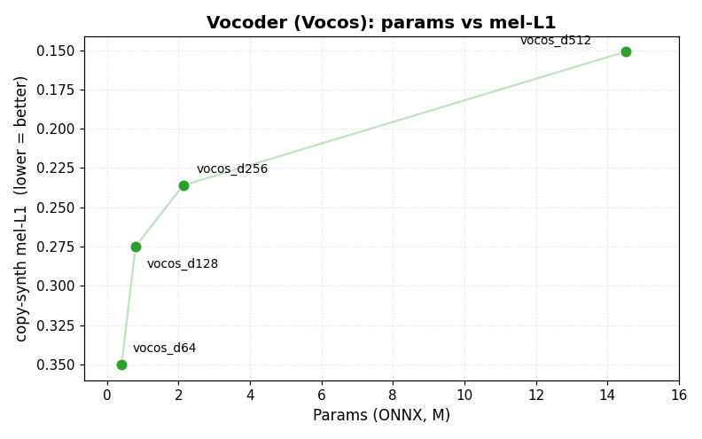
全 6 encoder × 4 vocoder = 24 通りの組み合わせを、合計パラメータ数(encoder + vocoder, ONNX)と end-to-end mel-L1 で比較。end-to-end mel-L1 は phoneme_ids →(teacher-forced duration)→ encoder → mel → vocoder → audio → mel を正解 mel と比較した L1(JSUT 50 発話で実測。小さいほど高品質)。
end-to-end mel-L1 は ほぼ encoder で決まる:同じ encoder なら 4 vocoder の値はほぼ一致し、 vocoder を大きくしても合計パラメータ数が増えるだけで end-to-end はほとんど改善しない (下図で vocos_d512 系列が右に大きくずれるのに縦位置はほぼ同じ)。品質を上げる主因は encoder の dim。
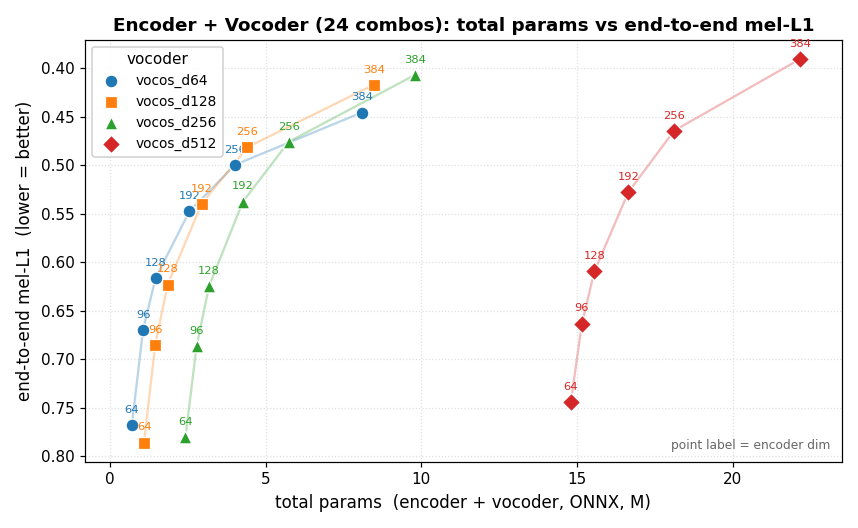